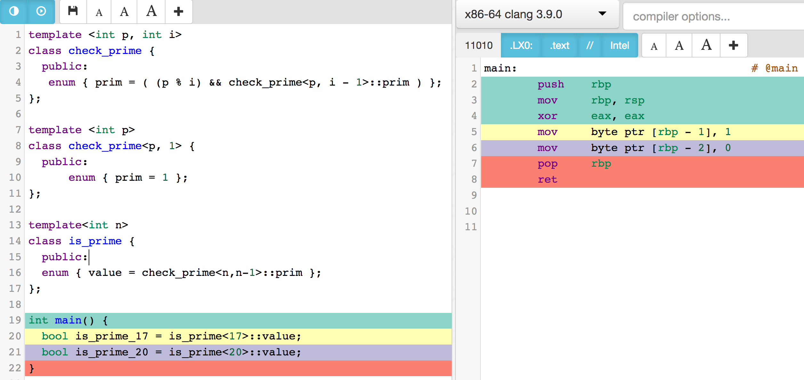
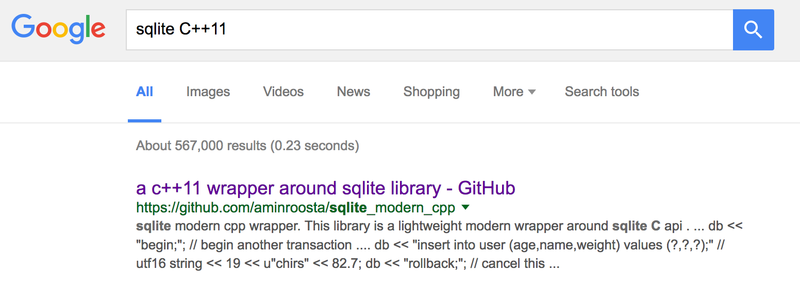
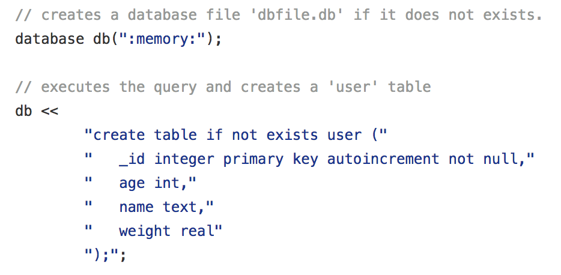
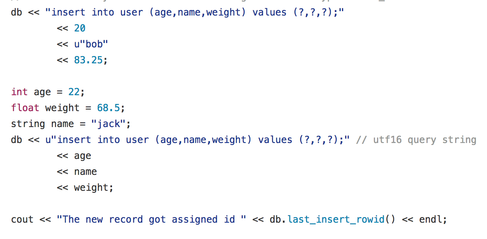
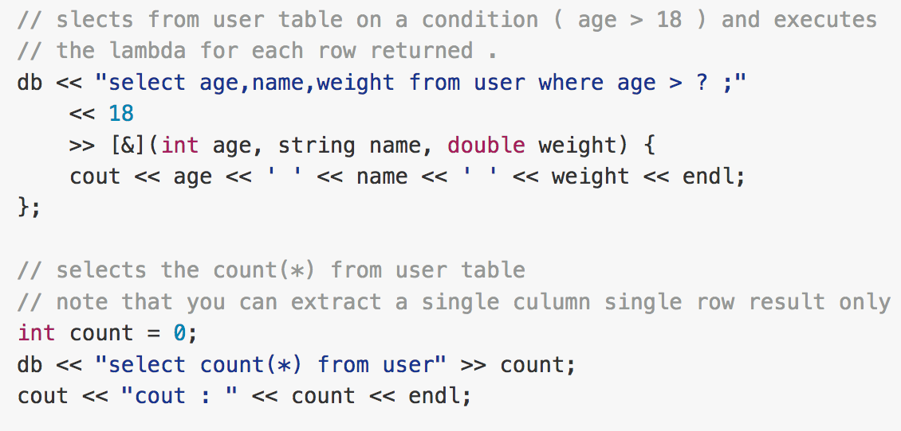

C++ Intrudoction
Part 1
Disclaimer

Object relational mapping (ORM):
A programming technique for converting data between incompatible type systems in object-oriented programming languages.
Reflection:
The ability of a computer program to examine, introspect, and modify its own structure and behavior at runtime.
Example C#
IEnumerable props = typeof(T).GetProperties();
foreach(var p in props) {
Console.WriteLine(p.Name + ' ' + p.PropertyType.Name)
}
Console.WriteLine(typeof(T).Name);
var t = new T();
PropertyInfo prop = t.GetType().GetProperty("PropertyName",
BindingFlags.Public | BindingFlags.Instance);
if(null != prop && prop.CanWrite) {
prop.SetValue(t, PropertyValue, null);
}
Let's Write a Micro-ORM in C#!
It's easier than you think :-)
What about lambda expressions?!
using System.Linq.Expressions;
Expression<Func<int, int, int>> expression = (a,b) => a + b;
BinaryExpression body = (BinaryExpression)expression.Body;
Console.WriteLine(expression.Body); // (a + b)
ParameterExpression left = (ParameterExpression)body.Left;
ParameterExpression right = (ParameterExpression)body.Right;
Console.WriteLine("{0}, {1}, {2}, {3}",
left.Name, body.NodeType, right.Name, body.Type);
/* a, Add, b, System.Int32 */ Javascript ( ͡° ͜ʖ ͡°)
db.run(`create table if not exists user (
id integer primary key autoincrement not null,
age int,
name text,
weight real
);`);
var stmt = db.prepare(`insert into user (age,name,weight) values (?,?,?);`);
stmt.run(21, 'joey', 80);
stmt.run(22, 'chandler', 65);
stmt.run(23, 'monica', 50);
stmt.run(24, 'ross', 75);
stmt.run(25, 'phoebe', 45);
stmt.run(26, 'rachel', 50);
stmt.finalize();
db.each('select * from user', function(err, row) {
console.log(row.age, row.name, row.weight);
});
C/C++ ಠ_ಠ
sqlite3* db;
sqlite3_open(":memory:", &db);
const char * query = "create table if not exists user ("
" _id integer primary key autoincrement not null,"
" age int,"
" name text,"
" weight real"
");";
sqlite3_exec(db, query , 0, 0, nullptr);
sqlite3_stmt *stmt;
sqlite3_prepare(db, "insert into user (age,name,weight) values (?,?,?);",
-1, &stmt, 0);
if(sqlite3_bind_int(stmt, 1, 21) != SQLITE_OK) return 1;
sqlite3_bind_text (stmt, 2, "chandler", -1, SQLITE_STATIC);
sqlite3_bind_double(stmt, 3, 70.0);
sqlite3_step(stmt);
sqlite3_reset(stmt);
sqlite3_finalize(stmt);
(⊙︿⊙)
sqlite3_prepare( db, "select * from user", -1, &stmt, 0);
while(sqlite3_step(stmt) == SQLITE_ROW) {
int age = sqlite3_column_int(stmt, 1);
sqlite3_column_bytes(stmt, 2);
string name = string(reinterpret_cast(sqlite3_column_text(stmt, 2)));
double weight = sqlite3_column_double(stmt, 3);
cout << age << ", " << name << ", " << weight << endl;
}
sqlite3_finalize(stmt);
Can we do better?
YES!
C++ Templates
template<typename T>
void Swap(T & a, T & b) { //"&" passes parameters by reference
T temp = b;
b = a;
a = temp;
}
template <unsigned int n>
struct factorial {
enum { value = n * factorial::value };
};
template <>
struct factorial<0> {
enum { value = 1 };
};
// factorial<0>::value would yield 1.
// factorial<4>::value would yield 24. C++ Metaprogramming
template <int p, int i>
class check_prime {
public:
enum { prim = ( (p % i) && check_prime<p, i - 1>::prim ) };
};
template <int p>
class check_prime<p, 1> {
public:
enum { prim = 1 };
};
template<int n>
class is_prime {
public:
enum { value = check_prime<n,n-1>::prim };
};
int main() {
bool is_prime_17 = is_prime<17>::value; // 1
bool is_prime_20 = is_prime<20>::value; // 0
}
Why? 
Solution
Sqlite Modern Cpp
(▰˘◡˘▰)
Pretty easy
ಠ_ಥ
Hard but doable in C++
(ಥ﹏ಥ)
Needs Magic!